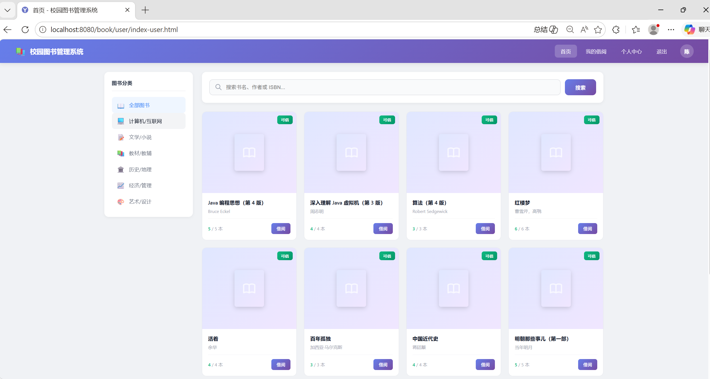
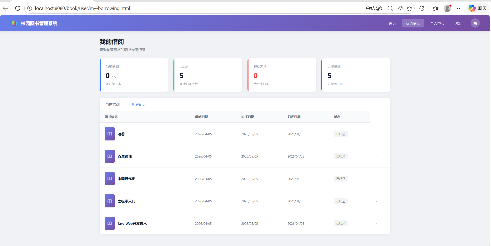
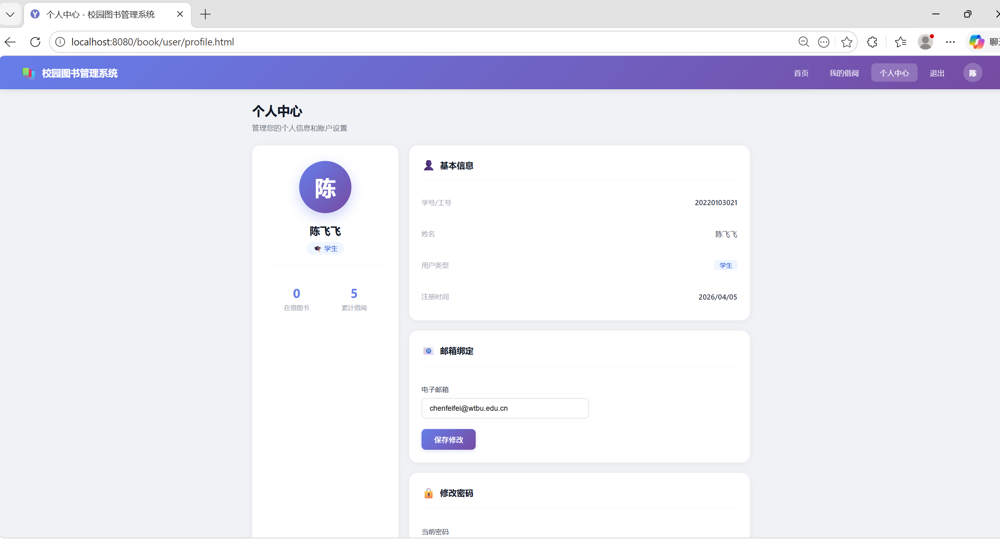
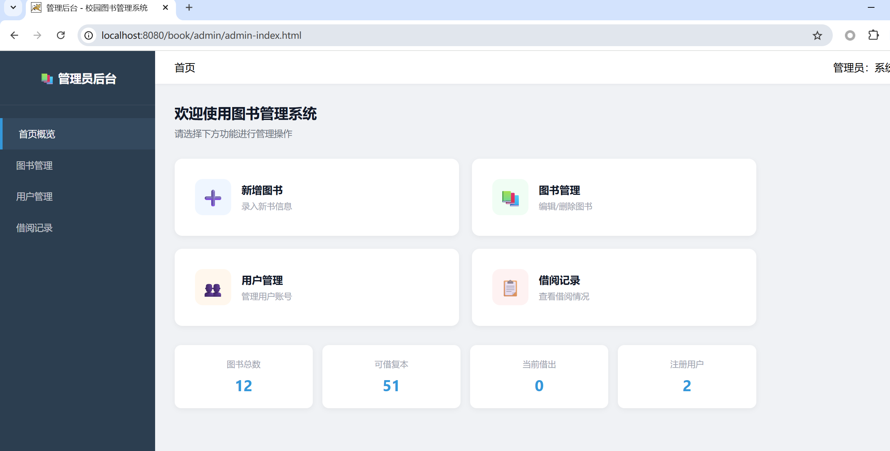
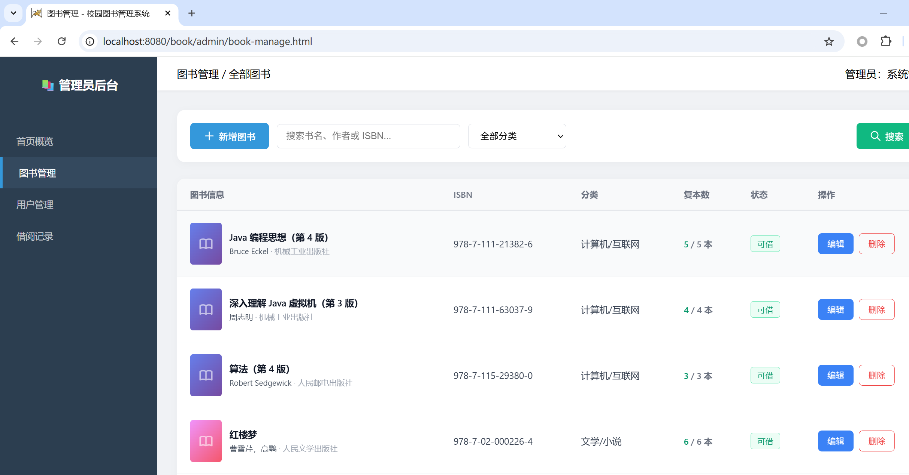
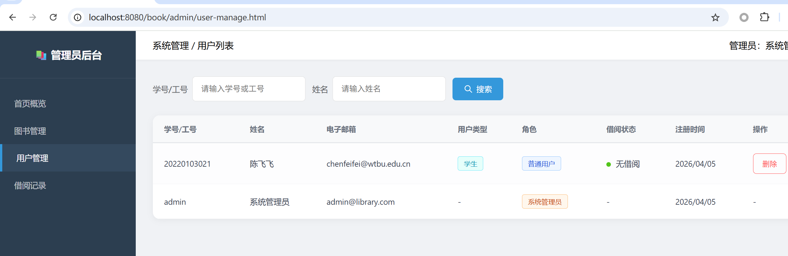
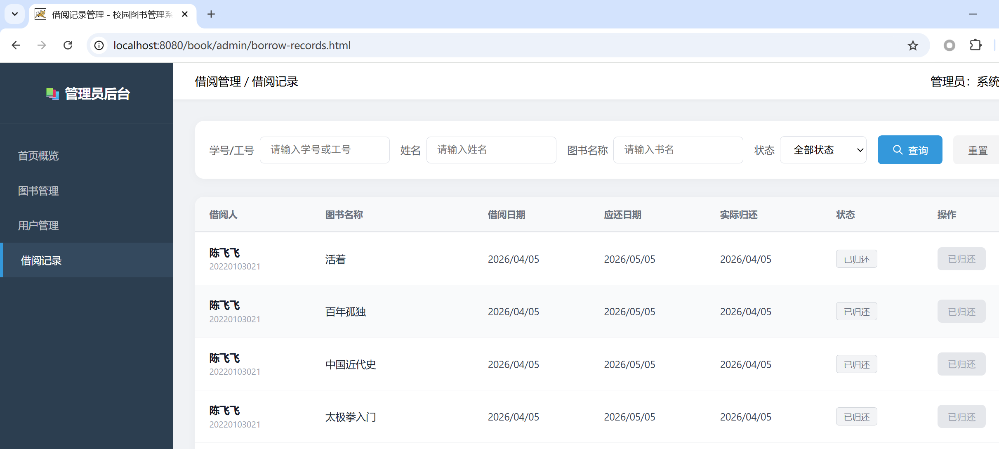
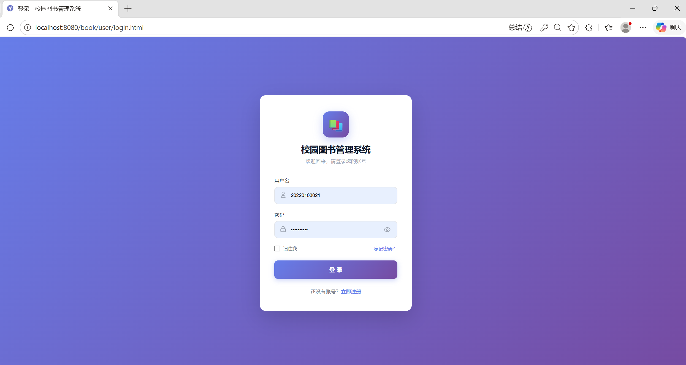

1.1 认识项目：体验系统与阅读文档¶
在开始自主项目的挑战之前，我们将通过"校园图书管理系统"进行一次完整的全流程演练。这个阶段，你的核心任务不是从零写代码，而是学会阅读文档、拆解任务，并指挥 Trae 严格按照规范去生成和修改代码。
零、 先睹为快：体验完整系统¶
在让 AI 写代码之前，请务必先访问我们为你部署好的线上体验环境。这将是你接下来要用代码一步步实现的"最终目标"。
- 项目体验地址：http://tomcat.chende.top/stu_25204149_assign_1/
- 管理员账号：
admin/ 密码：123456 - 普通用户账号：请在登录页点击注册，自行创建一个属于你的测试账号。
课前观察任务
请分别使用管理员账号和你刚才注册的普通用户账号登录系统，尝试寻找并对比：
- 能否进入后台？ 普通用户能否访问
/admin/admin-index.html等管理员页面？直接键入 URL 强行访问会发生什么？ - 能否删改数据？ 普通用户能否调用图书新增、用户删除等接口？后端是否会拒绝？
带着这些权限差异的直观感受，在后续查阅《需求分析说明书》并指挥 Trae 编写接口时，你就会明白为什么必须反复向 AI 强调"权限校验"的红线——前端的隐藏按钮只能改善界面，真正的权限检查必须放在服务端。
一、 业务背景与系统目标¶
1.1 业务背景¶
目前校园图书借阅涉及图书查询、借书、还书、借阅记录管理等工作。如果主要依靠人工登记，不仅查询效率低，还容易出现库存数量不准确、借阅记录遗漏和超期情况不清楚等问题。
校园图书管理系统面向学校师生和图书管理员，使用浏览器即可完成图书查询、借阅、归还和后台管理，提高图书借阅与管理效率。
1.2 系统目标¶
- 师生能够方便地查询图书，了解图书是否可以借阅；
- 师生能够在线完成借书、还书和借阅记录查询；
- 管理员能够统一管理图书、用户和借阅记录；
- 系统能够自动处理借阅期限、借阅上限和超期限制等规则；
- 系统能够区分普通用户和管理员，防止越权操作。
1.3 项目范围¶
本项目包含：
- 用户注册、登录、退出和个人信息管理；
- 图书浏览、搜索、分类筛选和详情查看；
- 图书借阅、归还、当前借阅和历史借阅查询；
- 管理员对图书、用户和借阅记录的管理；
- 图书多复本管理、超期判断和权限控制。
本项目暂不包含：
- 图书预约、排队和续借；
- 逾期罚款及在线支付；
- RFID、自助借还机等硬件设备；
- 不同学校之间的图书共享。
评价重点不是技术栈是否时髦
推荐使用 Spring Boot + Vue，但本课程的前置实验沿用 Servlet + JDBC + 原生 HTML/CSS/JS 路线。项目是否真正运行、业务流程是否完整、代码是否能够理解和解释，才是评价的关键。
二、 用户角色与典型场景¶
| 角色 | 说明 | 主要操作 |
|---|---|---|
| 未登录用户 | 尚未登录系统的访问者 | 注册、登录 |
| 普通用户 | 已注册的学生或教师 | 查询图书、借书、还书、查看借阅记录、维护个人信息 |
| 管理员 | 负责维护系统数据的管理人员 | 管理图书、用户和全部借阅记录 |
普通用户界面¶
登录后的用户首页采用"顶部导航 + 左侧分类 + 右侧图书内容"的布局，提供图书搜索、分类筛选和借阅入口：

点击图书卡片进入详情页，可查看封面、书名、作者、出版社、简介、总复本数与可借复本数，并发起借阅。图书详情页原型可参考 doc/UI/user/book_detail.html。
"我的借阅"页面顶部显示统计卡片，下方通过表格区分"当前借阅"和"历史借阅"，超期记录使用红色标签突出显示：

个人中心显示用户基本资料，并提供修改邮箱和修改密码功能：

管理员界面¶
管理员登录后进入后台首页，左侧菜单 + 右侧内容区，顶部显示统计卡片和常用功能入口：

图书管理页面提供新增、编辑、删除图书，删除前需二次确认；仍有复本借出的图书不可删除：

用户管理页面支持按学号、工号、姓名搜索，管理员账号或仍有借阅的用户，删除按钮会被禁用：

借阅管理页面展示全部借阅记录，支持按状态筛选，并可查看超期记录与管理员代还：

三、 核心业务规则一览¶
借阅规则是系统设计中最容易写错的环节，开发前务必先理解：
| 规则 | 具体要求 |
|---|---|
| 借阅上限 | 每名用户最多同时借阅 5 本图书 |
| 借阅期限 | 每次借阅期限为 30 天 |
| 库存限制 | 只有可借复本数大于 0 时才能借阅 |
| 超期限制 | 用户存在超期未还记录时，不能继续借阅新书 |
| 归还规则 | 只能归还本人正在借阅且尚未归还的图书 |
| 图书数量 | 借阅成功后可借复本数减 1，归还后加 1 |
| 删除图书 | 仍有复本借出的图书不能删除 |
| 删除用户 | 仍有图书未归还的用户不能删除 |
| 管理员保护 | 管理员账号不能通过用户管理功能删除 |
| 权限控制 | 未登录用户不能访问业务页面，普通用户不能访问管理页面 |
借阅检查流程如下：
flowchart TD
A["用户选择图书并点击借阅"] --> B{"是否达到5本上限？"}
B -- "是" --> X["拒绝借阅并说明原因"]
B -- "否" --> C{"是否有超期未还？"}
C -- "是" --> X
C -- "否" --> D{"可借复本是否大于0？"}
D -- "否" --> X
D -- "是" --> E["创建借阅记录和应还日期"]
E --> F["可借复本数减1"]
F --> G["提示借阅成功"]四、 获取带练项目资源¶
项目已经克隆到本地工作目录。请使用 Trae AI IDE 直接打开 book_template/ 子目录：
- Gitee 仓库：javaweb-dev-tech/lab2_2
- 本节目标目录：
book_template/ - README：book_template/README.md
如果尚未克隆，可执行：
五、 认识标准工程目录¶
打开 book_template/ 后，你会看到一个对 AI 友好的工程结构。在指挥 Trae 写代码之前，请务必先熟悉这些文档和目录的位置：
开发依据：只认两份说明书
本次开发只以 doc/需求分析说明书.md 与 doc/系统设计说明书.md 为依据。
doc/archive/是历史归档，仅作参考，其中旧版接口路径、数据库名等约定可能与新文档不一致。doc/UI/是页面原型，用于确定页面应包含的内容、布局和交互方式；视觉细节可自行优化，但页面核心信息和业务流程必须与需求保持一致。
六、 体验的第一步：把本地系统跑起来¶
现在你已经见识过线上的完整版，接下来要让本地的"半成品"也跑起来。请按以下步骤操作：
- 修改数据库配置：编辑
src/main/resources/db.properties，填入你的 MySQL 连接信息（本地数据库或实验提供的远程数据库）。 - 初始化数据库：参考 系统设计说明书 — 第 4 章 数据库设计 创建数据库
library_db与三张表：users、books、borrow_records，并插入测试数据（含默认管理员admin / 123456）。 - 配置 Tomcat：在 IDEA 中配置 Tomcat 11，将应用上下文（Application Context）设置为
/book，部署book_template。 - 启动并访问：启动 Tomcat，浏览器访问
http://localhost:8080/book/user/login.html。
当你在本地 localhost 也能看到与线上体验地址一样的初始登录界面时，意味着你已经准备好进入真正的 AI 辅助开发实战了。

七、 你将带着这些认知进入下一节¶
在进入 1.2 节之前，你应当已经能够回答：
- 系统有哪些用户？ 未登录用户、普通用户（学生/教师）、管理员。
- 每类用户能做什么？ 见本节"用户角色与典型场景"小节。
- 借书和还书需要遵守哪些规则？ 见本节"核心业务规则一览"。
- 哪些异常情况必须处理？ 5 本上限、超期、可借复本为 0、未登录访问、越权访问等。
- 项目文档在哪？
doc/需求分析说明书.md与doc/系统设计说明书.md。
带着这些问题的答案，我们将在 1.2 AI 编程利器登场：Trae IDE 与 Superpowers 技能框架 中，正式开始配置 AI 工具与规则。